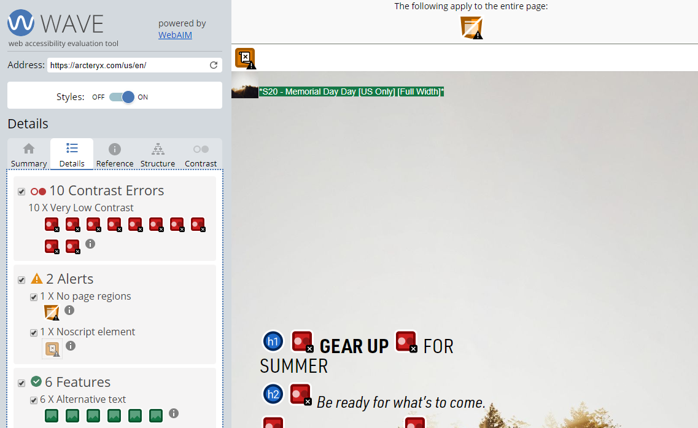
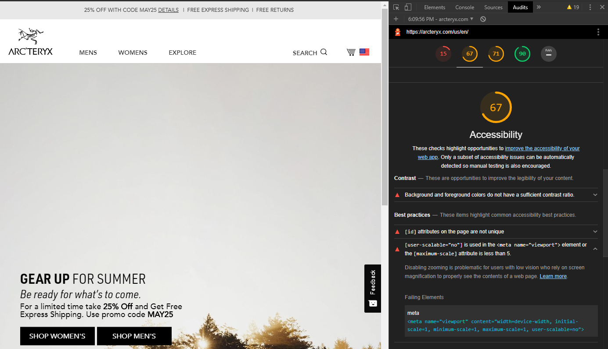

Test for Accessibility
We will be testing: Arcteryx.com
The purpose of this article is to show that all websites are never perfect. We always want to make our websites better, and an area that often gets overlooked is the "Accessibility" of that website. For example, government sites have policies in place under Section 508, stating that their disabled employees and nondisabled should all have access to the same information. With assistive technology and the proper pieces put into place by the developers of a website can be "accessible" by everyone. Striving towards building something accessible by all should be a goal for all developers.
Tools for Testing of: Arcteryx.com
We will use two main tools that will do the dirty work for digging into the nuts and bolts our website.
Wave
Lighthouse
Positives:
Features found by our tools that increase accessibility for individuals with disablities.
- HTML language tag is valid
- Buttons have accessible names
- The Page contains a heading, skip link, or landmark region
- Webpage has good Alternative text
Issues:
Features found by our tools that are MISSING from the webpage, and if added could increase accessibility for individuals with disablities.
- Background and foreground colors do not have a sufficient contrast ratio
- [id] attributes on the page are not unique
- Zooming is disabled
The issues above seem to be quite small. The biggest change would be re-desgining the homepage, to include a better contrast ratio with the colors chosen. This may or may not be needed depending on how far off they are on the contrast ratio scale. With [id] attributes and the zooming disabled, this could be an easy code change for their developers.
"Only a subset of accessibility issues can be automatically detected so manual testing is also encouraged."
-Google Lighthouse